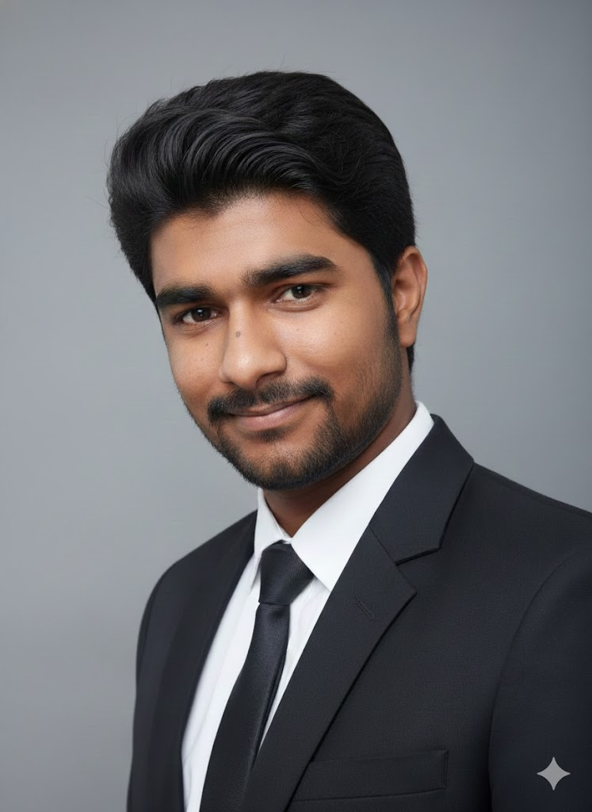

About Me

// Full Stack Dev · ML Enthusiast · Embedded Engineer
Kalyan Kumar Reddy
Hey! I'm a 3rd-year B.Tech Computer Science student at Amrita Vishwa Vidyapeetham, Ettimadai, Tamil Nadu. I approach problems like a controlled landing — speed, precision, and clean execution.
I prioritize continuous growth, mastering new tools, and ensuring every project exceeds expectations. I possess growing experience in full-stack development, machine learning, and system design — frequently exploring advanced areas such as embedded systems, blockchain technology, and distributed computing.
As I grow into a confident and well-rounded engineer, I'm actively focusing on improving my communication and presentation skills — ensuring I can articulate complex technical concepts effectively.